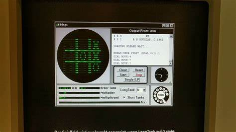
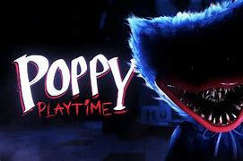
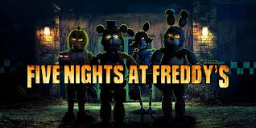
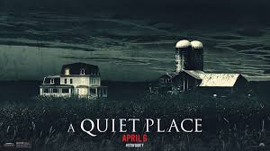
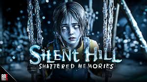

¿Que son los videojuegos?
Un videojuego es un programa electrónico que se juega en una pantalla o televisión, y que permite a una o más personas interactuar en un entorno virtual. En este entorno, el jugador controla a un personaje o elemento para conseguir objetivos dentro de unas reglas. Los videojuegos pueden ser una forma de entretenimiento y ocio, y pueden tener varios beneficios, como: Desarrollar habilidades cognitivas como la atención, la memoria, la creatividad y el trabajo en equipo Aprender idiomas Facilitar el aprendizaje de contenidos educativos Mejorar habilidades físicas y mentales Sin embargo, también pueden tener desventajas, como: Fomentar la agresión, Hacer que las personas inviertan demasiado tiempo en ellos. Existen muchos tipos de videojuegos, entre los que se encuentran los de acción, rol, estrategia, simulación, deportes, aventura o mundo abierto
¿Cual fue el primer videojuego en salir?
Durante bastante tiempo ha sido complicado señalar cual fue el primer videjuego, principalmente debido a las multiples definiciones de este han ido establecido, pero se puede considerar como el primer videojuego el Nought and crosses, tambien llamado OXO, desarrollado por Alexander S. Douglas en 1952. Es parecido a jugar gato, el gato se juega con dos letras X y O, tienes que hacer una line de tres ya sea horizontal, vertical o de lado
¿Que es mejor en pc, telefono o consola?
La elección entre jugar en PC, teléfono o consola depende de tus preferencias personales, el tipo de juegos que te gustan y la experiencia que buscas. Aquí te presento algunas ventajas de cada opción:
PC:
- Gráficos más avanzados y detallados
- Mayor variedad de juegos disponibles
- Posibilidad de personalizar hardware y accesorios
- Experiencia de juego más inmersiva con periféricos como teclados, ratones y volantes
Teléfono:
- Portabilidad y accesibilidad en cualquier momento
- Juegos casuales y sociales ideales para sesiones cortas
- Opciones gratuitas y de bajo costo
- Integración con otros servicios móviles
Consola:
- Experiencia de juego en pantallas grandes con sistemas de sonido envolvente
- Controles diseñados específicamente para juegos
- Acceso a títulos exclusivos de cada consola
- Facilidad de uso y configuración mínima
Considera tus prioridades:
- ¿Buscas gráficos impresionantes y juegos complejos? PC podría ser la mejor opción.
- ¿Prefieres jugar en cualquier momento y lugar? El teléfono es ideal.
- ¿Quieres una experiencia de juego cómoda y familiar en casa? Las consolas son una excelente elección.
Juegos populares
1.- popy playtime.
Es un videjuego de terror y puzzles desarrolado y publicado por la empresa MOB Entertainment, anteriormente era MOB GAMES. el juego consiste en 3 capitulos actualmente, el 4to capitulo saldra a meriados de enero del 2025 el primer trailer del capitulo salio en 30 de septiembre en 2024 y el segundo salio el 30 de octubre, el primer capitulo fue lanzado en Steam para Microsoft Windows el 12 de octubre de 2021. El 12 de marzo de 2022 se lanzo en play store para Android y en App Store para ¡OS, el 15 de enero de 2024 para Nitendo Swich y PlayStation 5 y el 12 de julio para xbox.
Es un survival horror en primera persona que se ambienta en el interior de una fabrica de jugutes donde el jugador trabajaba, la fabrica llamada " laytime Co" fue la mas popular en la decada de los 50 y por el lanzamiento de una muñexa de porcelana que era la mascota de la empresa llamada Poppy Playtime El jugador debe sobrevivir en la fabrica y enfrentar a diferentes enemigos que encontrara en los niveles de la fabrica, y que apareceran en diferentes capitulos en el primer capitulo tendar un artefacto llamado GrapPack, una mochila diseñada para lanzar sus manos y contine manos mecanicas para que interactue con puertas al jugador de poder seguir avanzando.
Encontraras cintas vhs de colores, que estaran repartidas por toda la fabrica que podras reproducir con un reproductor de acuerdo con su colorlos vhs te mortraran pistas de lo que susedio en la fabrica y tambien objetivos trasfondos de algunas personajes importantes. Los villanos del juego son los propios jueguetes que la fabrica crearon, deberas evitarlos por lo general secuencias de persecucion y algunos nefrentarlos para seguir avanzando.
2.- Five night at freddy's
Five night at freddy's, es una serie de juegos que contine cinco juegos principalmente. involuca a un guardia de seguridad que trabaja en la noche, debe vigilar un restaurante llamado Fazbear's Pizza esta pizzeria estara en volucadro en tres juegos El guardia de seguridad tendra una herramienta la camara de seguridad que podra utilizar para sobrevivir. Los enemigos son animatronicos llamadados Freddy, Bonnie, Chica, Foxy y Golden Freddy, los animatronicos estan poseidos por almas de niños que fueron asesinados por una persona llamada " El hombre de morado" o "William Afton". Trata de sobrevivir en la pizzeria, tus enemigos son animatronicos, los animatronicos te trataran matar. Para evitarlos deberas utilizar las camaras de seguridad y dos puertas que estan a tu izquierda y derecha y habra dos botones en cada puerta el blaco es para alumbrar el pasillo y el rojo es para cerrar la puerta cuando una animatronico este afuera, habra un animatronico que estara en tu cuarto de seguridad, para evitarlo deberasa abir la camara y el animatronico se ira.
3.- A quiet place
La trama de A Quiet Place: The Road Ahead sigue a una nueva familia que sobrevive a los primeros días del ataque de criaturas ciegas pero con un oído sobrehumano. La protagonista, Alex, es asmática, lo que añade una capa extra de desafío y tensión al juego. La historia se centra en la supervivencia y la adaptación a un mundo donde el silencio es crucial para evitar ser detectados por las criaturas. A medida que avanzamos, descubriremos notas de otros supervivientes y detalles que enriquecen el contexto del juego, creando una narrativa envolvente y emocionalmente impactante. La jugabilidad del juego es impresionante, el juego te hace ser muy sigilosos y estara conectado a tu microfono en tiempo real por lo que deberas ser muy sigiloso tanto en la vida real como el juego, el juego incluye macanicas como poner arena, la arena sirve para que camines en ella para caminar sin hacer mucho ruido.
El juego trata de la pelicula que fue lanzada el 6 de abril del 2018.
A Quiet Place: The Road Ahead se lanzará oficialmente el 17 de octubre de 2024 en Steam, PlayStation 5 y Xbox. Series X|S.
4.- Silent hill: Shatterd Memories
Es un videojuego de terror de climax group desarrollado bajo supervcion de KONAMI, disponibles para PlayStation 2 y PlayStation Portable. La historia de Silent hill: Shatterd Memories es una interpretacion del primer juego de "Silent hill origen, para PlayStation, 1999". El protagonista llamado Harry Mason en busca de su hija Cherlyl, despues de que ella desaparecio en un accidente en en coche en el misterioso pueblo llamada SILENT HILL.
EL juego fue lanzado el 8 de diciembre del 2009.
